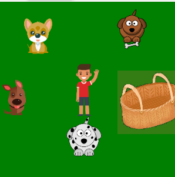

What This Program Does
This program is named dog rescue, the goal is to collect the dogs and put them in the basket, rescueing him.
Screenshot or Visual

Project Link
Coding Concepts I Used
One Part of the Code I Understand Well
The code that allows you to direct and push sprites around, I understand this code very well because if it comes into contact with other sprites they will push.
One Bug or Challenge I Fixed
When I was making the basket sprite the picture was not cropped and had a whole invisible backround. It was very difficult to make it work
One Thing I Would Improve
One thing that I would imrpove on is I would make it so when the dogs are in the basket they show up in the basket and it doesnt still look empty.